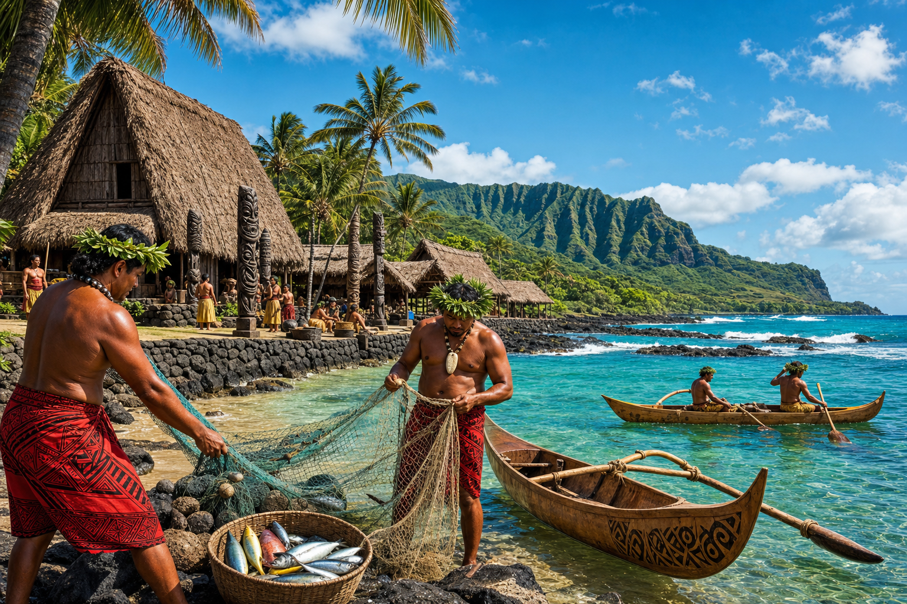
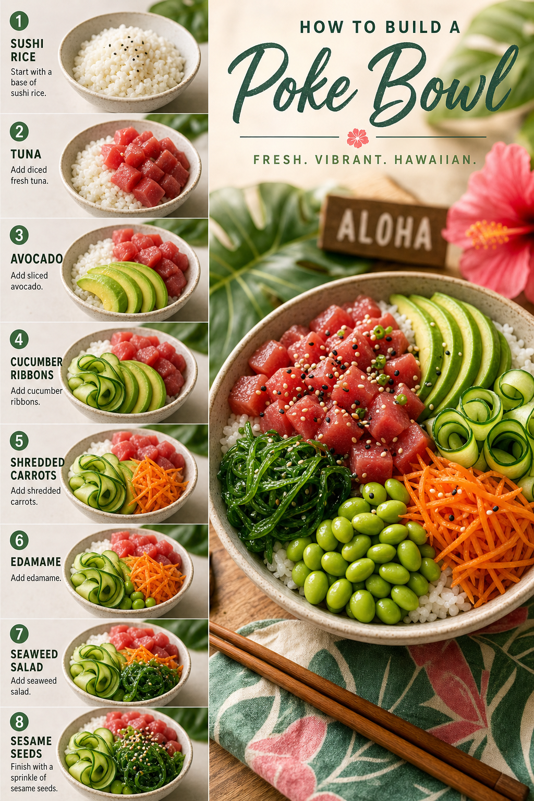
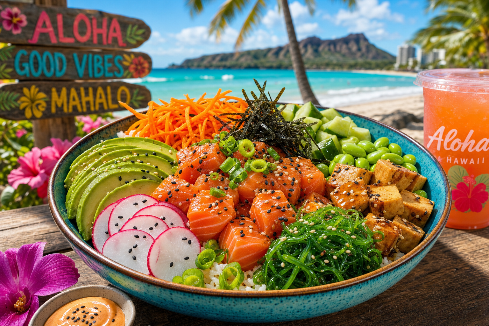
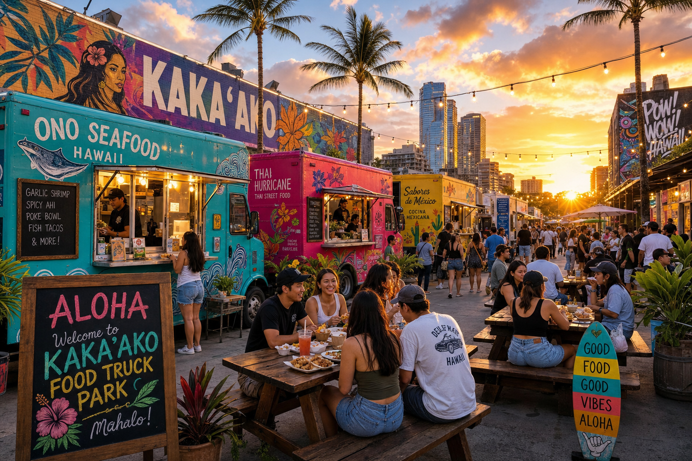

Culture
The Ancient History of Poke in Hawaii
Poke is more than a food trend — it's a centuries-old Hawaiian tradition. We trace its roots from ancient Polynesian fishermen to its explosion on the world food stage.
Poke culture, Hawaii food scenes, and stories from the docks.

Poke is more than a food trend — it's a centuries-old Hawaiian tradition. We trace its roots from ancient Polynesian fishermen to its explosion on the world food stage.

An honest guide to the best poke in Honolulu from someone who eats it every day. From fish markets to food trucks — where to find the real stuff.

Both are wildly popular, but ahi and salmon poke are completely different experiences. We break down the flavor, texture, and tradition behind each fish.

There's an art to building a great poke bowl. The right base, sauce balance, and topping selection makes all the difference. Here's our professional guide.

Poke has a reputation as a healthy meal, but how does it actually stack up nutritionally? We break down the macros and micronutrients of our most popular bowls.

Kakaako has become Honolulu's food truck capital. We spotlight the best trucks, tips for visiting, and why this waterfront neighborhood is Hawaii's most exciting food destination.